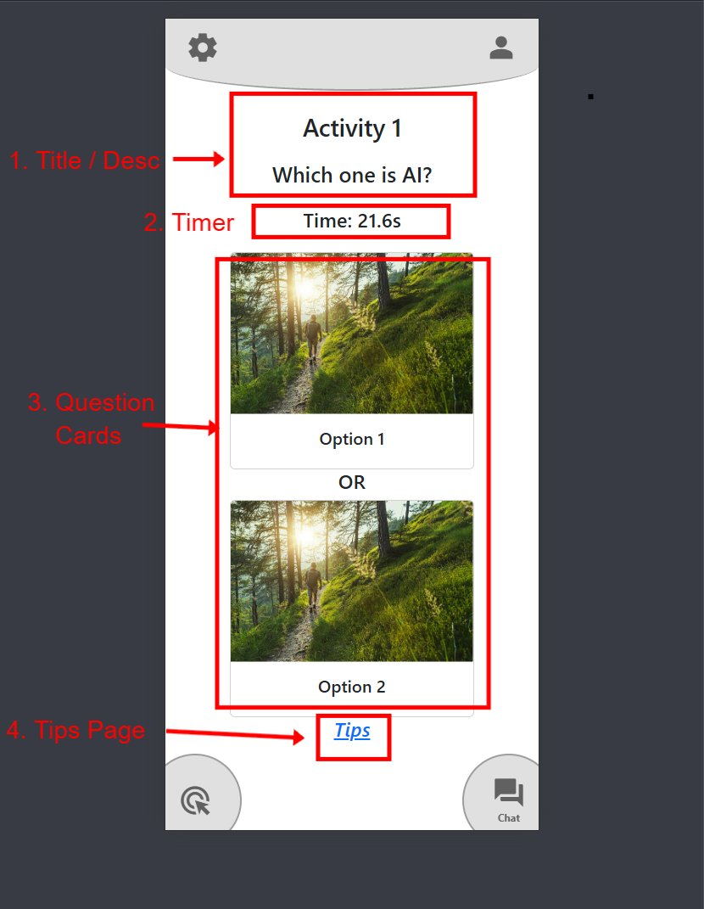

How to play?
Look here:

- The title and description of what to do.
- The amount of time you have been engaged for.
- Pick the correct card according to the question at the top.
- A hyperlink that takes you to another page showing you tips.
